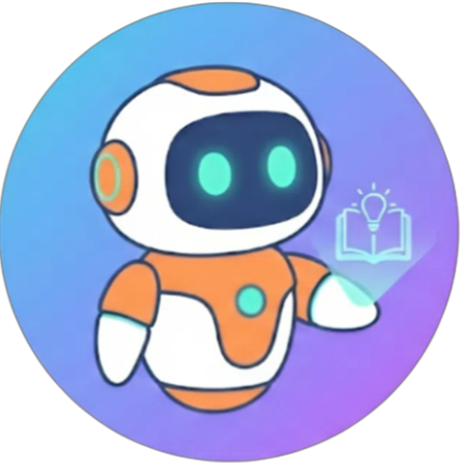
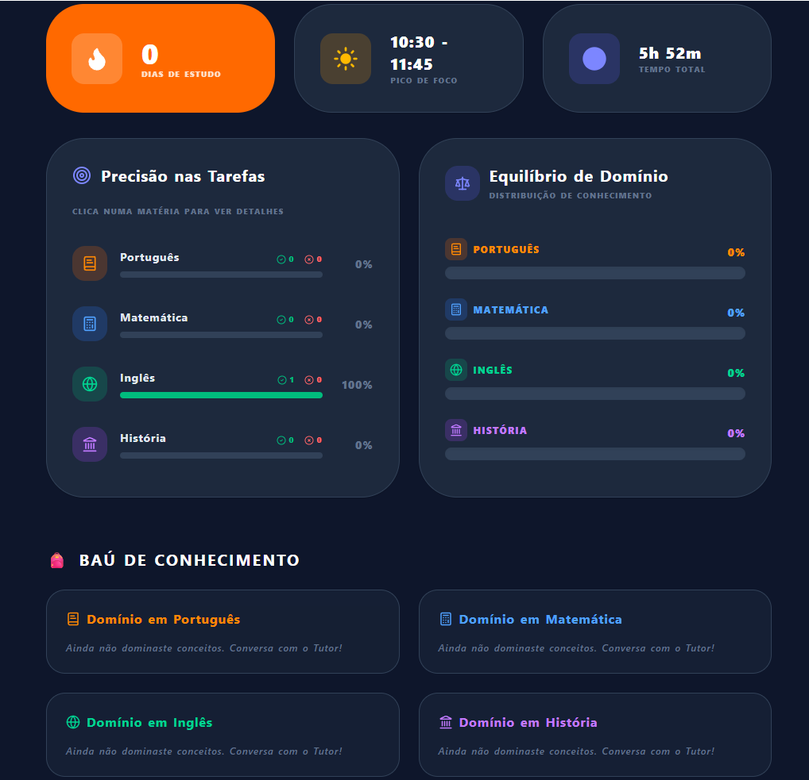
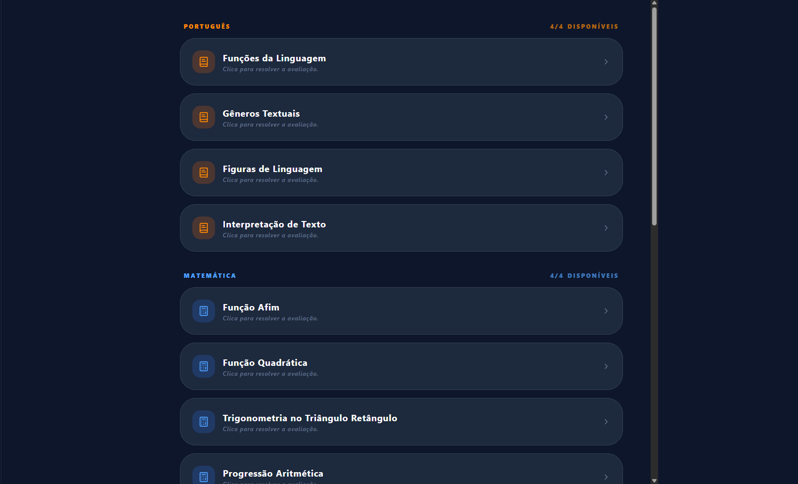

Aprendizagem Adaptativa Baseada em IA
Contexto
Aulas longas e lineares saturam a retenção natural do estudante ao longo do dia escolar.
Impossibilidade física de um docente acompanhar individualmente o ritmo de 20 ou mais alunos em simultâneo.
Dúvidas pontuais geram atrasos cumulativos que comprometem o desempenho final do ano letivo.
Proposta
Ajuste automático da complexidade dos exercícios com base no histórico direto de dificuldades do utilizador.
Uso de analogias práticas e dinâmicas de gaming para explicar conceitos puramente abstratos.
Disponível tanto como aplicação nativa Desktop quanto via Navegador Web para máxima acessibilidade.
Métricas e Evolução
Exibição analítica da percentagem de acertos e erros distribuída pelas quatro disciplinas base: Português, Matemática, Inglês e História.
Os testes concluídos com sucesso no Chat Inteligente são arquivados e listados como "domínio conquistado" na interface do aluno.

Mecanismos de Aprendizagem
Exercícios gerados em tempo real com base no perfil de escolaridade selecionado pelo estudante.
Garante conteúdos 100% originais e focados nas competências pedagógicas de cada disciplina.

Arquitetura
Interface Reativa
Design Utilitário
Software Nativo
Cloud & Dados
IA Hub
Fluxo Técnico
O utilizador interage com a interface estruturada em React + Tailwind CSS.
Desktop: O Electron orquestra o pedido nativo. / Web: O browser faz requisições HTTPS diretas.
O OpenRouter faz a ponte segura enviando o pedido para o modelo remoto configurado pelo programador.
A base de dados do Supabase persiste as notas e o histórico do aluno em tempo real.
Frontend
Biblioteca base que permite o reaproveitamento total do código visual tanto para Web quanto para Desktop via Electron.
Framework utilitário que garante uma aplicação leve e visualmente padronizada em todos os ecrãs.
Ambiente
Cria um ambiente focado e isolado para o aluno, evitando que distrações do navegador prejudiquem o foco de estudo.
Execução direta no motor de JavaScript do browser, permitindo acesso imediato sem necessidade de instalação.
IA Hub
Contratos de comunicação que permitem ao TutorAI enviar perguntas e receber respostas estruturadas de servidores remotos.
Plataforma agregadora onde eu defini nas configurações qual o modelo ideal (ex: Llama 3) a ser consumido, garantindo a melhor relação de custo, velocidade e coerência pedagógica.
Backend
Garante que os níveis de domínio e notas do aluno sobrevivam estáveis ao fecho do programa ou desligar do PC.
Infraestrutura assente em PostgreSQL para gestão relacional do histórico e armazenamento seguro de dados dos utilizadores.
Segurança
Tokens cifrados que validam a identidade do aluno sem expor as suas credenciais em cada ciclo de uso.
Passwords guardadas com algoritmos criptográficos de sentido único, tornando as credenciais ilegíveis no banco de dados.
Row Level Security: Isolamento estrito onde cada estudante só consegue aceder exclusivamente aos seus próprios registos.
Performance
Métrica de atraso na transmissão. Manter este valor baixo previne a quebra de atenção do estudante no processo ativo de estudo.
Refatoração do JavaScript para garantir o menor consumo de CPU e RAM, permitindo rodar em computadores escolares antigos.
Análise de Testes
Falha Identificada: Ícones nativos (como o microfone e o caixote do lixo) que usam caracteres emoji ficam corrompidos ou invisíveis em ambientes Linux devido à ausência de fontes proprietárias.
Desenvolvimento de uma opção nas configurações do sistema para alternar o modo de humor e desativar totalmente os emojis, mantendo a interface do chat limpa e legível.
A identificação e mitigação deste bug servem como prova empírica de que a aplicação foi testada em diferentes plataformas de hardware e sistemas operativos.
Evolução
Substituição completa dos emojis por ícones vetoriais SVG geridos de forma independente para blindar o design em distribuições Open Source.
Migração estrutural do core em React para React Native, estendendo o TutorAI para smartphones iOS e Android.
Implementação de quadros de liderança entre turmas e insígnias digitais de conquista integradas diretamente ao Baú do Conhecimento.
"A tecnologia serve para personalizar o percurso de aprendizagem, respeitando a biologia do foco de cada estudante."